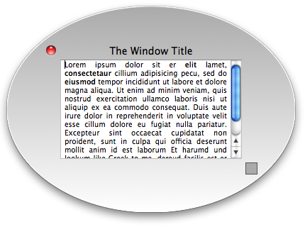

Please note: this article is part of the older "Objective-C era" on Cocoa with Love. I don't keep these articles up-to-date; please be wary of broken code or potentially out-of-date information. Read "A new era for Cocoa with Love" for more.
Drawing a custom window on Mac OS X
Occasionally, you may want a window to look completely different to the standard window styles provided by Apple. This post will show you how to draw a custom window and implement close, resize and drag functionality.
Introduction
In this post, I will present a custom window and frame class that will draw the following window:
Clicking and dragging in any part of the frame of this window will drag the window, except the gray square (which operates as a resize thumb) and the close box (which operates in a standard manner).
You can download the complete Xcode 3.1 project for RoundWindow (63kB).
Constructing a transparent window
Making a custom window starts with a transparent window. I will use a custom NSWindow subclass named RoundWindow. The constructor for this subclass looks like this:
- (id)initWithContentRect:(NSRect)contentRect
styleMask:(NSUInteger)windowStyle
backing:(NSBackingStoreType)bufferingType
defer:(BOOL)deferCreation
{
self = [super
initWithContentRect:contentRect
styleMask:NSBorderlessWindowMask
backing:bufferingType
defer:deferCreation];
if (self)
{
[self setOpaque:NO];
[self setBackgroundColor:[NSColor clearColor]];
}
return self;
}The three changes made to the window by this constructor are fairly obvious:
NSBorderlessWindowMask(a window without standard window framing)setOpaque:NO(so that any part of the window can be transparent)setBackgroundColor:[NSColor clearColor](if we do nothing else, this will paint the window transparent)
The result is a transparent, rectangular window. This method can be invoked directly (if creating a window in code). It will also be invoked by the NIB loader when loading the window from a NIB.
Since this window uses the NSBorderlessWindowMask style, we must override the canBecomeKeyWindow and canBecomeMainWindow methods to return YES. These overrides will allow the window to be the keyboard focus and primary application window respectively.
Space for the window frame
Now that we have a clean, blank slate, we need to draw the frame of the window. The first requirement is some space around the content of the window to draw the frame.
To create this space, we override the content to frame conversion methods:
- (NSRect)contentRectForFrameRect:(NSRect)windowFrame
{
windowFrame.origin = NSZeroPoint;
return NSInsetRect(
windowFrame, WINDOW_FRAME_PADDING, WINDOW_FRAME_PADDING);
}
+ (NSRect)frameRectForContentRect:(NSRect)windowContentRect
styleMask:(NSUInteger)windowStyle
{
return NSInsetRect(
windowContentRect, -WINDOW_FRAME_PADDING, -WINDOW_FRAME_PADDING);
}This will add WINDOW_FRAME_PADDING (75) pixels border around the content rectangle. Actually, since this is a borderless window, the content view itself will be expanded by 75 pixels on each side. The next part will compensate for this, so the content view will be the expected, non-expanded size.
Creating the window frame
The normal structure of a window on Mac OS X is:
NSWindowNSThemeFrame(draws the standard window frame)NSView(the window'scontentView)
My first thought was to try replacing the existing theme frame view. However, this quickly proved to be too difficult. This private subclass of NSView handles many quirks associated with view hierarchy, layout and window drawing that I didn't want to implement myself.
Instead, I chose to override the setContentView: and contentView: accessors on the window so that my frame view is always inserted between the theme frame and the contentView:
NSWindowNSNextStepFrame(the theme frame for a borderless window)RoundWindowFrameView(thecontentViewas seen by theNSWindow)NSView(thecontentViewas seen by other classes)
The setContentView: override on the RoundWindow looks like this:
- (void)setContentView:(NSView *)aView
{
if ([childContentView isEqualTo:aView])
{
return;
}
NSRect bounds = [self frame];
bounds.origin = NSZeroPoint;
RoundWindowFrameView *frameView = [super contentView];
if (!frameView)
{
frameView =
[[[RoundWindowFrameView alloc]
initWithFrame:bounds]
autorelease];
[super setContentView:frameView];
}
if (childContentView)
{
[childContentView removeFromSuperview];
}
childContentView = aView;
[childContentView setFrame:[self contentRectForFrameRect:bounds]];
[childContentView
setAutoresizingMask:NSViewWidthSizable | NSViewHeightSizable];
[frameView addSubview:childContentView];
}So this method inserts the RoundWindowFrameView in between the content view and the NSNextStepFrame. The childContentView is an instance variable on our RoundWindow class, used to find this view again later (if we are asked to fetch, replace or resize it).
Creating this disparity between the internal content view (our RoundWindowFrameView) and the external content view (the childContentView) creates some issues. Other NSWindow methods like setContentSize: will also need to be overridden if they are to behave as expected. These overrides should be relatively straightforward and simple, compared to the work that would have been required to replace the NSNextStepView with our RoundWindowFrameView.
Drawing the frame
We can draw the window frame however we want: it's just a custom NSView. We draw the background of the view with [NSColor clearColor] again. The shadow behind the window is drawn automatically for whatever shape we draw. Any part of the window that is left completely clear will not receive mouse clicks (they will fall through the window).
For my custom window, I add a standard close box. The standard close control can be created using the method:
closeButton = [NSWindow
standardWindowButton:NSWindowCloseButton forStyleMask:NSTitledWindowMask];There are two quirks. First: it doesn't update itself when the window becomes/resigns mainWindow status (so we must detect this and tell it to redisplay). Second: the mouse "rollover" effect doesn't seem to work (I was unable to address this problem).
Handling window controls
The close button will close the window without us doing anything else. Drag and resize behavior will require work on our part.
Both dragging and resizing the window involve changing its frame. So they can both be done by calling:
[window setFrame:newFrame display:YES animate:NO];If we continuously call this method in a focus locked event loop that tracks NSLeftMouseDraggedMask operations, then the updates will happen smoothly as the mouse is dragged.
This event loop looks like this:
while (YES)
{
NSEvent *newEvent = [window
nextEventMatchingMask:(NSLeftMouseDraggedMask | NSLeftMouseUpMask)];
if ([newEvent type] == NSLeftMouseUp)
{
break;
}
// Determine the frame changes for the mouse operation and apply...
}The code for determining the frame changes, while straightforward, is a little long to include here but you can look at the mouseDown: method in the RoundWindowFrameView to see how it's done.
Conclusion
You can download the complete Xcode 3.1 project for RoundWindow (63kB).
Drawing a custom window with no behavior is simple but as with other types of custom controls, numerous little behavioral additions may be needed to make it feel truly polished.
As a resizable circular window, the RoundWindow suffers from its fixed 75 by 75 pixel frame width. This is too big for small windows and not enough for large windows to properly enclose the content view in a circle. To properly enclose a rectangular content view in a circular frame, the frame would need a variable width (something I didn't want to set up for this simple post).
A custom window may also want to handle truncation of the title when it gets too long. Other window controls like the toolbar button, toolbar, minimize and zoom buttons and the "unsaved changes" status on the close button are all responsibilities of the window frame that have not been investigated here.
Paramanoir has posted an article that draws a custom window in a different way: by swizzling a newdrawRect:method into the defaultNSThemeFrameclass at runtime. This has a few advantages (NSThemeFramecontinues to handle the window controls) so you may want to consider that approach as an alternative.
Instance variable to synthesized property (an Xcode user script)
OrderedDictionary: Subclassing a Cocoa class cluster